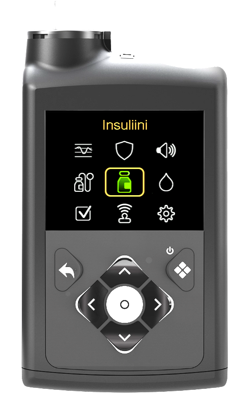
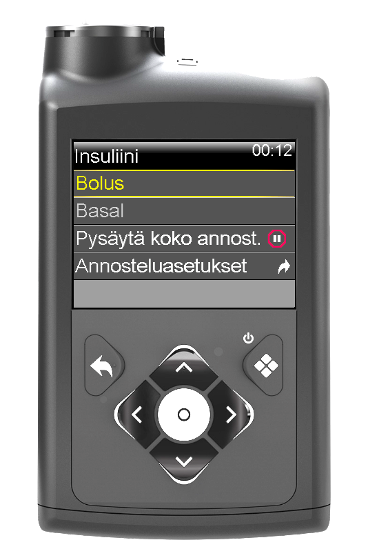
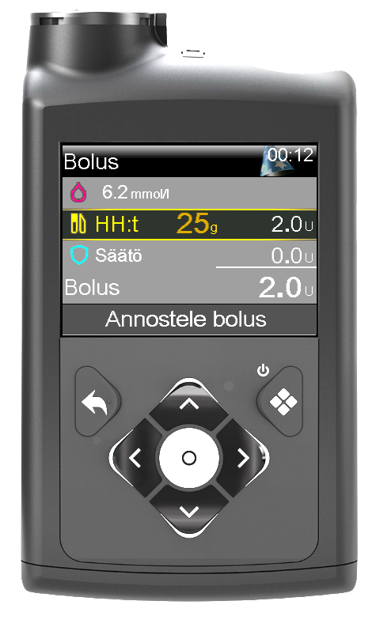
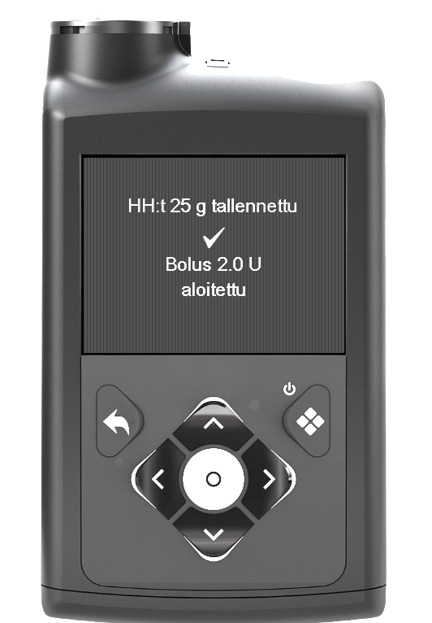

🍽️ Ateriabolus
Ateriaboluksella katetaan aterian sisältämät hiilihydraatit. Oikein ajoitettu bolus auttaa pitämään verensokerin tasaisempana ruokailun jälkeen sekä vähentää korkeiden verensokerien riskiä.
Ennen boluksen antamista
Tarkista aina:
- Sensorin glukoosi (SG)
- Trendinuolet
- Onko ulkoilu tai liikunta alkamassa pian
- Onko ruokailu varmasti alkamassa
⏱️ Boluksen ajoitus
| Tilanne | Suositus |
|---|---|
| Verensokeri ≥ 9 mmol/l | Anna bolus noin 30 minuuttia ennen ruokailua. |
| Verensokeri 5–8 mmol/l | Anna bolus noin 15 minuuttia ennen ruokailua. |
| Verensokeri 4–4,9 mmol/l | Anna bolus noin 5–10 minuuttia ennen ruokailua. |
Huom! Ajoitus on suositus. Huomioi aina verensokerin trendi sekä mahdollinen tuleva liikunta.
📉 Laskeva trendi
Jos verensokeri on laskussa ennen ruokailua:
- Huomioi trendinuolet ennen boluksen antamista.
- Arvioi liikunnan vaikutus.
- Tarvittaessa odota hetki ennen boluksen antamista.
- Jos verensokeri on matala tai laskee nopeasti, katso 03 Matalan verensokerin hoito.
📱 Ateriaboluksen antaminen
1. Avaa insuliinivalikko
Avaa pumpun päävalikosta Insuliini.

2. Valitse Bolus
Valitse Bolus.

3. Syötä hiilihydraatit
Syötä aterian hiilihydraattimäärä grammoina. Tarkista syötetty määrä ennen hyväksymistä.

4. Vahvista bolus
Varmista, että bolus käynnistyy onnistuneesti.

🍽️ Jos ruokamäärä on epävarma
Jos et ole varma kuinka paljon lapsi syö, bolusta ei tarvitse antaa koko aterialle kerralla.
- Voit antaa ensin esimerkiksi 15 grammaa hiilihydraattia vastaavan boluksen.
- Anna loppubolus myöhemmin, kun tiedetään kuinka paljon lapsi söi.
- Käytä tilanteessa aina omaa harkintaa.
🚶 Poikkeavat tilanteet
Boluksen ajoitukseen voivat vaikuttaa esimerkiksi:
- Ulkoilu tai liikunta alkaa pian.
- Liikunta jatkuu pitkään ruokailun jälkeen.
- Ruokailu viivästyy.
- Retkipäivä tai muu tavallisesta poikkeava päivä.
🔔 Kolmiosainen muistutusääni
Jos boluksen aloitus jää kesken eikä sitä vahvisteta loppuun, pumppu antaa pian kolmiosaisen muistutusäänen.
Palaa bolusnäkymään ja varmista, että annostelu on tehty loppuun.
✅ Muista
- Tarkista sensorin glukoosi (SG).
- Tarkista trendinuolet.
- Huomioi mahdollinen liikunta tai ulkoilu.
- Tarkista hiilihydraattimäärä ennen hyväksymistä.
- Varmista, että bolus onnistui.
- Jos verensokeri on matala tai laskee nopeasti, siirry lukuun 03 Matalan verensokerin hoito.